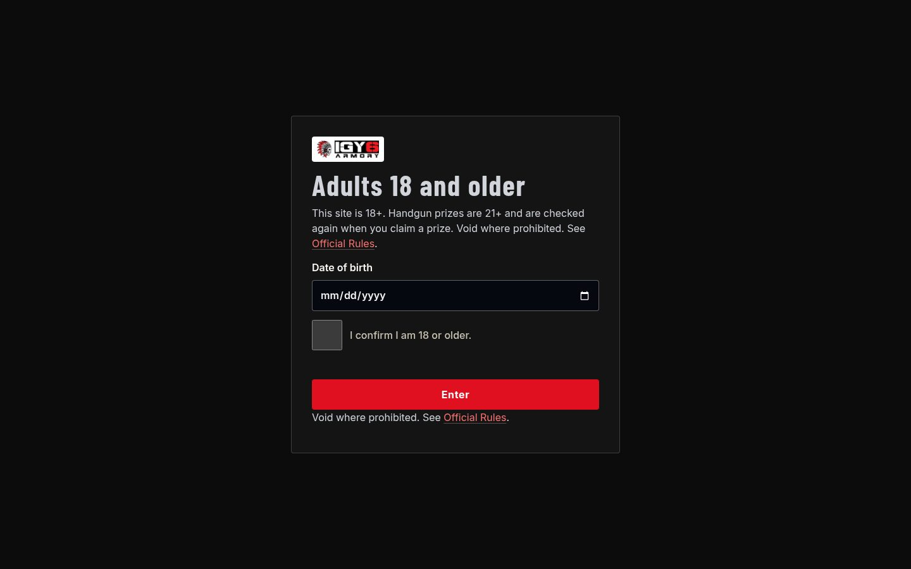
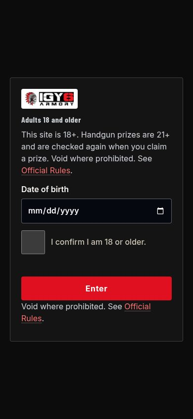

Selected Work / Case Study № 20
review prototype
I GOT YOUR 6 · igy6armory.clientreview.co
I GOT YOUR 6
Sample rez operator site: live webinars, seats booked with Marks, free entry available.

The Brief
Five steps, then one booked seat wins
Free entry Official Rules Live webinars I GOT YOUR 6 A live product-review webinar.
The review page calls itself a demo site and a sample rez operator.
02 — Identity
Tokens from the stylesheet
Swatches are named tokens from the stylesheet.
Color
ink-on-ivory
--ink-on-ivory#16120A
ink-on-ivory
--ink-on-ivory#1A1010
Type
Aa Bb
ABCDEFGHIJKLMNOPQRSTUVWXYZ · abcdefghijklmnopqrstuvwxyz · 0123456789
Inter · named in the stylesheet
Aa Bb
ABCDEFGHIJKLMNOPQRSTUVWXYZ · abcdefghijklmnopqrstuvwxyz · 0123456789
Barlow Condensed · named in the stylesheet
Logo
Logo pending — content needed
No logo file was found on the live site or a review prototype. A wordmark was not drawn for this page.

Screenshot pending — content needed
A second mobile screen was not in the prototype files or this repo. The Hive study shows two phones. This page has the one homepage capture stored for the work grid.
03 — Mobile
Homepage on a phone
The phone frame is a screenshot of the same page, captured at phone width. It is not enlarged.
Results pending — content needed
No load time or before-and-after figure is in a project guide or scope file. Numbers printed on the source page are not repeated here as results.
04 — In Detail
Lines from the live homepage
Screenshot pending — content needed
Section crops were not in the source files. The three notes below are homepage lines, not separate screenshots.
Review prototype
Five steps, then one booked seat wins
Free entry Official Rules Live webinars I GOT YOUR 6 A live product-review webinar.
Review prototype
On the page
Claim a Seat How It Works Seats booked with Marks Official Rules Get Text Alerts 18+ site Handguns 21+ Marks book seats 50 seats No purchase necessary.
Review prototype
On the page
How a webinar works Five steps, then one booked seat wins Seats are booked with Marks, never with money.
Quote pending — content needed
No named quote or testimonial was copied. Homepage review counts, where the site prints them, stay in the brief as the site's own line.
05 — The long scroll
Homepage viewport
The image is the homepage capture already in this repo. It is the top of the page, not a stitched full-page scroll.
Screenshot pending — content needed
A full-page scroll capture is not in the source files.